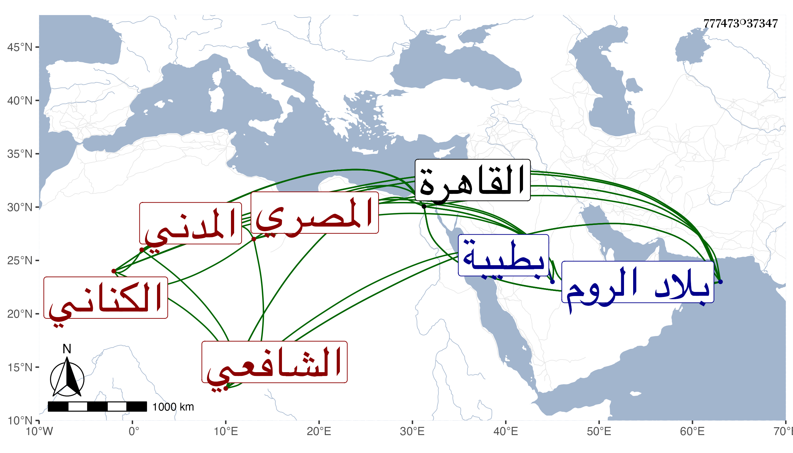

0902Sakhawi.DawLamic.ITO20230111-ara1.EIS1600.777473037347
Biography ID: 777473037347
265
محمد بن محمد بن عبد الرحمن بن محمد بن صلح بن إسماعيل الزكي بن فتح الدين أبي الفتح بن ناصر الدين بن التقي الكناني المصري الاصل المدني الشافعي الماضي أبوه وجده ويعرف كسلفه بابن صلح . ولد في رمضان سنة ست وثلاثين وثمانمائة بطيبة ونشأ فحفظ القرآن والشاطبية والمنهاج وجمع الجوامع وعرضها على جماعة واشتغل قليلا وقرأ على المناوي وغيره ، واستقر بعد أبيه في الخطابة والإمامة بالمسجد النبوي مع النظر عليه وجمع له معها القضاء حين سفر أخيه صلاح الدين لليمن سنة ثمانين وكان قدم القاهرة في سنة خمس وسبعين وسافر منها إلى الروم بل دخل القاهرة والروم قبل أيضا . وكان وجيها عظيم الهمة متوددا للغرباء اغتيل في ليلة السبت ثالث عشري ذي الحجة سنة اثنتين وثمانين عند باب المسجد النبوي على يد بعض العياسي بمعاونة جماعة منهم لكونه حكم في الدار المأخوذة منهم وفاز بالشهادة ، ولم يلبث أن مات قاتله بعد مصيره عبرة بخراج طلع على قلبه بل مات قبله بعض من عاونه في القتل وعمى آخر كان من رؤوسهم وصاروا إلى أسوأ حال . رحمه الله وعفا عنه .
